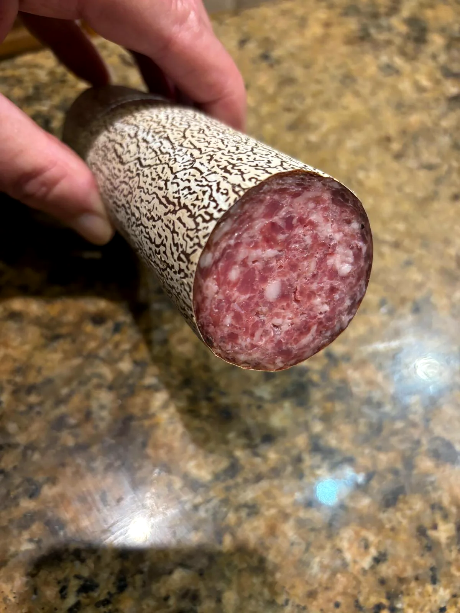
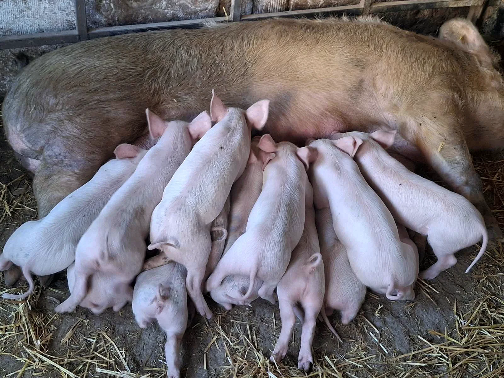

1 · A családi asztaltól
Sokáig csak magunknak készítettük
A hagyományos disznótoros termékek készítése a családunkban hosszú évekre nyúlik vissza. Hurka, kolbász, disznósajt, szalonna, sonka. Évtizedeken át kizárólag saját fogyasztásra készültek, a családi receptek és a hagyományos ízvilág megőrzésével.
Aztán aki egyszer kóstolta, visszajött. A pozitív visszajelzések és a házias termékek iránti igény adta a bátorságot, hogy ezeket a finomságokat mások számára is elérhetővé tegyük.
2 · Az állattól a fűszerig
A teljes út a mi kezünkben van
Őstermelők vagyunk: az állatokat mi tenyésztjük, a takarmányt és a növényeket mi termesztjük hozzájuk. Sertés, mangalica, marha. Mind a mi portánkon nő fel, nyugalomban, gondoskodással.
Ezért tudjuk pontosan, mi kerül a termékeinkbe, és ezért merjük garantálni a minőséget. Nem vásárolt alapanyagból dolgozunk: ami a pultunkra kerül, annak minden lépését mi magunk csináltuk végig.


3 · A bolt
Így született a Hegyháti Finomságok
A kínálatunkban a klasszikus disznótoros termékek mellett saját különlegességeink is megtalálhatók, mint a parasztmájas és a borókás szalámi, amelyek egyedi ízvilágukkal gazdagítják a pultot.
Az üzletünk: Pécsi Vásárcsarnok, Pécs, Zólyom utca 4. Útvonal ↗
Elindítottuk a kistermelői tevékenységet. A családi receptek hivatalosan is piacra léptek.
Megnyitottuk üzletünket a Pécsi Vásárcsarnokban, Hegyháti Finomságok néven.